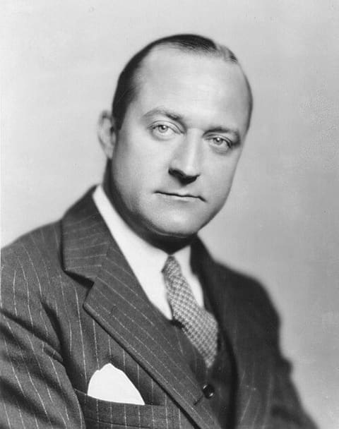

Henry Hazlitt
Jornalista econômico e filósofo americano associado à Escola Austríaca, popularizou a crítica ao intervencionismo e ao planejamento estatal, destacando as consequências invisíveis de tarifas e subsídios.
- Espectro mais próximo
- Direita
- Ideologia mais próxima
- Neoliberalismo
- Personalidade mais próxima
- Milton Friedman
